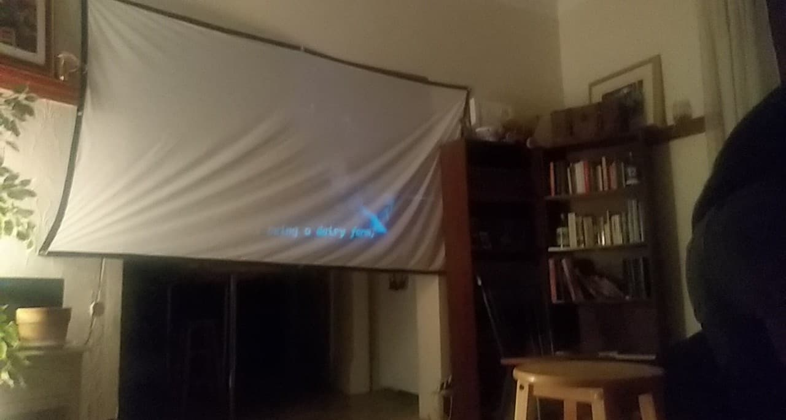
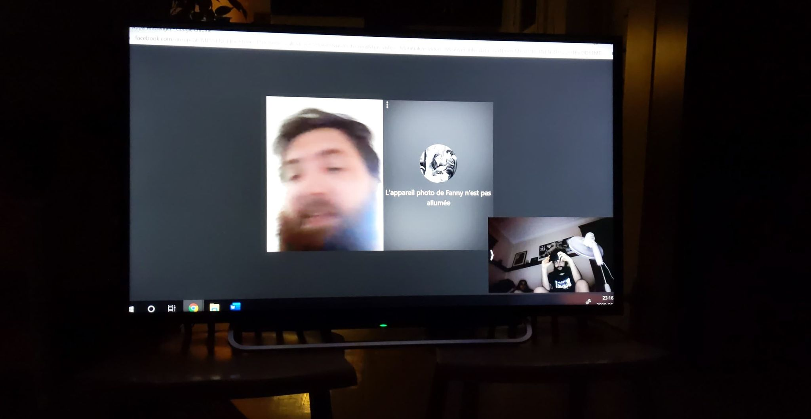

Soirée Cinéma
2018
Janvier - Le Roi et l'Oiseau.
Février - Space Odyssey.
Mars - Whiplash.
Avril - Primer.
Mai - Er ist Weider da.
Juin - Chappie.
Juillet- The Shining.
Août - Planets of the Apes.
Septembre - L'Homme qui Plantait des Arbres.
Octobre - Night of the Living Dead.
Décembre - Incendie.

2019
Février - Fly Over a Cuckoo's Nest. (Chez Éloïse)
Mars - The Lobster. (Chez Éloïse)
Mai - Fight Club.
Juillet- Le Déclin de l'Empire Américain.
Septembre - The Room.
Septembre + 1 - The Disaster Artist.
Octobre - Hot Fuzz.
Novembre - Apocalypse Now.

2020
Janvier - Rashomon. (Kurosawa)
Février - The Dictator. (Chaplin)
Mars - Stalker. (Tarkovsky) (Zoom pour la première fois)
Avril - The Departed. (Scorcese)
Mai - Pain and Glory. (Pedro Almodvar)
Juin - Close Encounters of the Third Kind. (Speilberg)
Juillet- À Bout de Souffle. (Godard)
Août - Full Metal Jacket. (Kubrick)
Septembre - La Dolce Vita. (Fellini)
Octobre - Rear Window. (Hitchcock)
Novembre - The Seventh Seal. (Bergman)
Décembre - Mommy. (Dolan)

2021
Janvier - Grease. (HS. Teen Movie)
Février - Her. (CC. Romantique)
Mars - The Green Book. (JT. Road Movie) (Zoom pour la première fois)
Avril - Double Indemnity. (FB. Films Noirs)
Mai - Pea Soup. (JC. Documentaire)
Juin - Princesse Mononoke. (CC. Animation) ... à écouter ;)
Juillet- À déterminer. (Science-fiction)
Août - À déterminer. (Horreur/Thriller)
Septembre - À déterminer. (Western)
Octobre - À déterminer. (Épic)
Novembre - À déterminer. (Drame)
Décembre - À déterminer. (Surprise!)
2022
Janvier - The Green Knight.
Mai - O Brother Where Art Tho.
Juillet - Eternal Sunshine of the Spotless Mind.
2023
Mai - Everything Everywhere All at Once.
Novembre - RRR.
2024
Mai - Killers of the Flower Moon.
Août - The Zone of Interest.